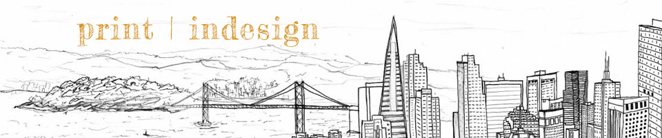
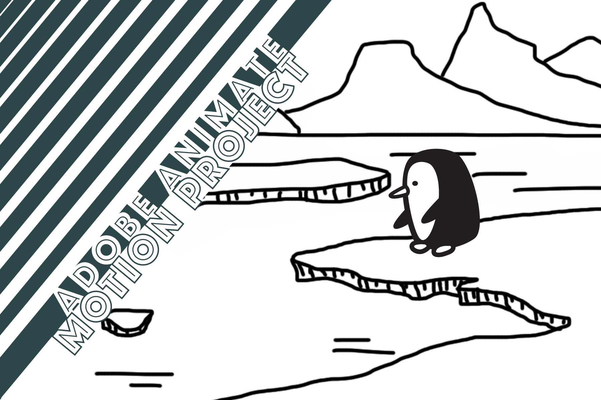

Since most of my work tends to lean more delicate in nature, I wanted to create a print project that had lots of bold graphic elements. I also typically use rectangular text boxes and frames for my images when making print layouts, so I decided to switch that up and have some fun with angles and polygonal shapes. I am fairly happy with how the project came out and particularly like the fonts I chose to use for the display and body text.